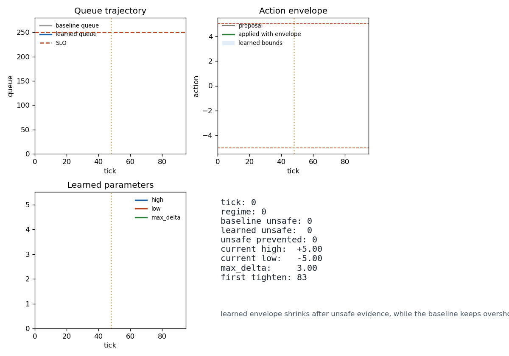

00导读 · 本知识库如何阅读
每一节都按同一套模板展开：机制直觉 → 公式 → 重绘原理图 → 工程实现 → 对照与局限。
阅读动线
- §01 背景 解释问题出处；§02 经典残差 是基线。
- §03~§04 是业界在原有残差框架内做的两次"修补式微创新"——Norm 位置调整和 HC/mHC 多通道残差。
- §05~§07 是本文的核心：显式纵向自注意力及其分段变体，以及如何在 Transformer 层内与横向注意力解耦。
- §08~§09 响应论文结尾两问：要不要多头？能不能跳层？
- §10 把所有策略收敛到统一接口，并给出"确定性"的三项可度量指标。
- §11 俯视全局：为什么说 Attention Residuals 是 Transformer 最后一块拼图。
关键术语一览
| 术语 | 中文 | 一句话含义 |
|---|---|---|
F_l(x_l) | 残差函数 | 第 l 层要学的"还不会的部分"。 |
隐式纵向自注意力 | — | 传统残差 x+F(x) 其实在层间做了一个平均权重的加法，权重恒等，无法学习。 |
AttnRes_l | 纵向注意力残差 | 把隐式的那条加法变成可学习的 softmax 加权。 |
a_{l,k} | 层间注意力权重 | 第 l 层对第 k 层输出的依赖强度，Σ_k a_{l,k}=1。 |
Block / Full | 分段 / 全连通 | 纵向注意力只跨 Block 出口（分段）还是跨每一层（全连通）。 |
确定性 | — | "该关注的一定被关注；该解耦的一定独立；该预算的一定有界"三件事。 |
01背景 · 为何要更深
深度学习的核心假设：多层非线性变换会自动涌现"层次化特征金字塔"。
"更深"不是目的
浅层学边缘 / 词形，深层学概念 / 篇章。追求更深的真实动力是 更精准的内容理解、更稳定的任务执行、更可靠的未知应对。 但深度一旦上去，梯度消失与优化困难会让训练从"概率事件"退化为"靠运气"。
加深的两个诅咒
- 梯度消失：链式法则让浅层的梯度随层数指数衰减，浅层参数动不起来。
- 任务不清晰：每层要学"完整映射"时，层间的分工不明确，训练动态容易震荡。
这两点正是 §02 残差网络要回答的问题，也是后续所有演进（HC/mHC、Attention Residuals）真正的出发点。
02经典残差 x + F(x)
把"学映射"改成"学残差"，让每一层只补当前学不会的部分。
机制直觉
与其让每层学 H(x)，不如学 F(x) = H(x) - x。
若某层什么都学不到，把 F 压到 0 即可，网络就退化为恒等映射，不会更差。
这种"错题本"式的分层学习是深层网络能训得起来的根本原因。
关键收益
- 优化目标更简单：每层只补"还不会的部分"。
- 梯度可回流：identity 短路让梯度直达浅层，缓解消失。
- 最差恒等：
F=0时退化为恒等，性能不退化。
实现定位
class ClassicResidual(nn.Module):
def forward(self, x): return x + self.sublayer(x)
隐藏着的"纵向注意力"
换一个视角看：经典残差可以写成
x_{l+1} = 1·x_l + 1·F_l(x_l)，
即一个权重恒为 1 的固定加法。
如果把 x_l 看作"历史信息"，F_l(x_l) 看作"本层新增的信息"，
那这条加法就是一条隐式的、不可学习的纵向注意力。
§05 要做的事，就是把这个固定权重替换成 softmax 学出来的权重。
03Pre-Norm / Post-Norm
归一化放在残差前还是残差后，看起来只是工程细节，实则决定了信息流的质感。
两种写法
Post-Norm（原始 Transformer）
先相加再归一化。好处是输出尺度稳定，问题是浅层信息的绝对尺度逐层丢失——每叠一次 LN，早期层的大部分幅值都会被压掉，深层需要反复把它"学回来"。
Pre-Norm（Kaiming/GPT 后的主流）
只在 F 内部做归一化，残差本身保持原始尺度。训练更稳，但深层难以区分"归一化带来的常数偏差"与"微小学习目标"，深层学习效果受限。
为什么论文不绕 Norm 继续打补丁
Norm 只是把"已经被残差稀释的信息"再校准一遍，它治的是症。 论文认为：真正的病根在于加法权重恒等这件事，因此 §05 直接让权重 softmax 化。 Pre-Norm / Post-Norm 在工程上仍然保留，作为可组合的归一化方式（两种写法代价对比见 §10）。
实现定位
NormWrapper(sublayer, style=NormStyle.PRE_NORM | POST_NORM | NONE, d_model=D)
三种模式共享同一个 sublayer，便于同一份 F 做 A/B；NONE 时退化为经典残差。
04HC / mHC · 多通道残差
字节 / DeepSeek 的"分科学习"路线：单通道残差扩展为 M 个并行通道，通道间可混合。
机制直觉
人类不会只用一本错题本，而是数学、物理、化学各一本。
HC 把残差从 1 条变成 M 条并行通道 X^{(1)}..X^{(M)}，通道之间通过可训练的 M×M 矩阵 A（identity 侧）和 B（F 的输入侧）混合：
mHC 再加一刀：把 A、B 约束为块对角（分组混合），避免全连接带来的爆炸。
关键缺口
- 没有跨层：HC/mHC 仍然只混当前一层的 M 条通道，所有历史层的学习成果被打包为一个不可分割的整体，带进每一步——信息过载。
- 复杂度外溢：A、B 参数矩阵 + 特殊初始化 + 调参，让复现性和泛化预期下降。
用文章的话讲："修补式的微创新，可能并非通往高确定性的终极路径。" HC/mHC 方向上做的是"分科学习"，而非"分层学习"，两者不是同一个问题。
实现定位
HyperConnection(sublayer, d_model, channels=M, groups=G)
groups=1⇒ 普通 HC；groups=G>1⇒ mHC（块对角）。channels=1退化为ClassicResidual（已有单元测试覆盖）。
05Attention Residual · 核心机制
把"隐式、恒等权重的层间加法"升级为"显式、可学习、softmax 归一的层间注意力"。
从 x + F(x) 到 AttnRes + F(x)
在经典残差里，x_{l+1} = x_l + F_l(x_l)——对"历史层 x_0..x_l"做了一次平均权重的加法，但这个权重固定（只取最近一层）。
Attention Residual 的核心洞察：既然它本质上是一条对历史层的加法，就应该像横向 self-attention 那样把权重 softmax 化。
公式
q_l = W_Q^{(l)} · x_l：每层只新增一个 Query 矩阵，这是唯一必需的新增参数。K_k = W_K · x_k：Key 默认在历史层共享同一套W_K（论文默认配置）。Σ_k a_{l,k} = 1是硬约束（softmax 天然满足），保证信息守恒、避免过载。
三把锁，把"稀释 / 过载"彻底锁死
- 必然关注：
Σ a = 1让每层一定能看到历史，不再"被动等运气"。 - 最大保真：softmax 是概率单纯形上的投影，浅层重要信息若被分配到较大权重，就不会被深层噪声抹掉。
- 负载均衡：softmax 让总权重守恒，避免"所有历史都被加进来"的 HC 式过载。
与经典残差的对应关系
| 视角 | 经典残差 | Attention Residual |
|---|---|---|
| 层间权重 | 固定 1 | 可学习 a_{l,k}，softmax 归一 |
| 历史访问 | 仅最近一层 x_l | 全部历史 x_0…x_l |
| 新增参数 | 0 | 每层一个 W_Q（可选共享 W_K） |
| 信息保真 | 随层数概率性稀释 | 确定性、可审计 |
实现定位
class AttentionResidual(nn.Module):
W_Q, W_K = nn.Linear(D,D,bias=False) × 2
def forward(history, x_l) → AttnRes_l
class AttentionResidualConnector(sublayer, attn_res):
return attn_res(history, x) + sublayer(x)
可审计性
每次 forward 之后，调用 attn_res.last_weights() 可拿到 a_{l,k}，形状 [K, B, T]。
这是 §10 里三项确定性指标之一（"必然关注"）的输入。
06Block Attention Residuals · 分段机制
把 L 层切成若干 Block，纵向注意力只跨 Block 出口做，把 O(L²) 压到 O((L/B)² + L)。
为什么要分段
Full Attention Residuals 每一层都对所有历史层做一次注意力，其纵向计算量随层数二次增长。 对 L ≥ 100 的超深模型，这会把显存和 FLOPs 都吞掉。 分段策略的核心直觉是：相邻层之间的信息本来就靠经典残差传就够了，关键的"非邻长程依赖"才需要显式注意力。
机制
- 把 L 层切成
G = L / B个 Block，每个 Block 有B层。 - Block 内部：按经典残差
x + F(x)逐层前向（也可选用 Attn Residual，视配置而定）。 - Block 之间：第
b个 Block 的起点 =AttnRes_b(block 0 output, ..., block b-1 output)。
边界情形
| 配置 | 等价于 |
|---|---|
num_blocks = 1 | 一整块，纯经典残差栈 |
layers_per_block = 1 | 每层一个 Block，等价 Full Attention Residuals |
num_blocks × layers_per_block = L | 中间态，复杂度/表达力取舍点 |
"2 选 1" 的工程选择
文章作者观察到：在 Block Attention Residuals 的图里，同时保留"黑线（Block 内经典残差）"和"红线（Block 间 AttnRes）"
属于信息冗余——数学上仍能收敛，但违背设计初衷。
本工程默认 inner_residual = False，Block 之间只用 AttnRes；保留 inner_residual = True 作为 ablation 开关。
实现定位
BlockAttnResStack(sublayer_factory, attn_cfg, BlockConfig(num_blocks=G, layers_per_block=B, inner_residual=False))
每个 block 出口的注意力权重通过 stack.trace() 暴露出来，便于离线分析"哪个 Block 主要靠哪条历史路径在推理"。
07纵横解耦的 Transformer 层
横向 self-attention 管"上下文理解"，纵向 AttnRes 管"层间信息传递"。两者 Q 独立。
为什么要解耦
在传统 Transformer 里，横向 MHA 和隐式的纵向残差耦合在一起： "一次 token 间的注意力调整"既会影响上下文建模，又会通过残差改变层间信息流，让训练动态难以分析。 Attention Residuals 把纵向这条线拎出来单独参数化，等价于让两条正交的信息流各走各的。
完整层内计算流
解耦带来的三件事
- 可审计：训练震荡时，可以分别看横向 MHA 和纵向 AttnRes 的权重/梯度，定位问题来自上下文还是层间。
- 可替换：横向换 MoE / MLA / sparse attention 并不影响纵向 AttnRes 的结构。
- 可统计：§10 的"纵横解耦指标"就是度量两边参数梯度余弦相似度的工具。
实现定位
class DecoupledTransformerLayer:
self.mha = nn.MultiheadAttention(D, num_heads) # 横向
self.ffn = _FFN(D, d_ff) # F_l
self.attn_res = AttentionResidual(cfg) # 纵向
单元测试验证了"两边梯度都非零且可独立更新"（tests/test_stack.py::test_decoupled_layer_gradients_reach_both_paths）。
08多头纵向自注意力（§6 开放讨论 1）
横向早就多头化了；纵向的头也可以。
为什么还要再加头
单头 Attention Residual 只能在"一个子空间"里决定当前层倾向哪条历史路径。
多头版本让不同子空间（比如"语义相关的路径"和"位置相关的路径"）各自投票，然后再拼起来，对长程信息的利用更充分。
这是论文结语抛出的第一个开放问题，也是本工程里唯一扩展了 W_V 和 W_O 的模块。
公式
与单头的退化关系
当 num_heads = 1 且 W_V = I、W_O = I 时，MultiHead 与 AttentionResidual 数值一致。
工程默认把 num_heads = 1 作为"纯粹配置"，保持 §05.3 的 Less-is-More 精神；
需要更强表达时再升到多头。
实现定位
MultiHeadAttentionResidual(cfg: AttnResConfig(d_model, num_heads))
W_Q, W_K, W_V, W_O = nn.Linear(D,D,bias=False) × 4
单元测试覆盖了"多头权重在每个头内 Σ_k a = 1"这项硬不变量（tests/test_attn_residual.py::test_multi_head_weights_sum_to_one_per_head）。
09动态跳层门控（§6 开放讨论 2）
Transformer 层多了之后，不是每一层都值得跑——让门控自己学。
机制
给每一层附加一个可学习标量 w_l，用 sigmoid 映射成门 g_l ∈ (0,1)：
- 训练阶段：
g_l随梯度连续调整；门接近 0 的层事实上对输出贡献极小。 - 推理阶段：如果
g_l < τ（阈值），直接把该层当恒等短路，省掉一次前向。
g_l 决定当前层"正经工作"与"直通"的比重。初始化策略
默认初始化 w_l = 4.6（σ ≈ 0.99），等价于"门默认开着"，不破坏原模型的表达能力。
训练过程中允许门自然下降，直至某些层被自动关掉。
实现定位
LayerSkipGate(sublayer, attn_res, init_gate=4.6, skip_threshold=0.1)
10统一 Stack & 确定性指标
六种残差策略共用一个入口；三项指标把"确定性"变成可度量。
六选一：ResidualStack(mode=...)
| Mode | 对应章节 | 额外参数 | 退化情形 |
|---|---|---|---|
CLASSIC | §02 | — | — |
HYPER | §04 HC | hyper_channels = M | M=1 ≡ CLASSIC |
MANIFOLD_HYPER | §04 mHC | hyper_channels, hyper_groups | groups=1 ≡ HC |
FULL_ATTN_RES | §05 | attn_cfg | — |
BLOCK_ATTN_RES | §06 | block_cfg | num_blocks=1 ≡ CLASSIC；layers_per_block=1 ≡ FULL |
MULTI_HEAD_ATTN_RES | §08 | attn_cfg(num_heads>1) | heads=1 ≡ FULL |
三项确定性指标
§5.2 给出的"信息传递必然关注 / 训练动态可控 / 分段机制保证工程可行"三条，在 metrics.py 里对应三个可调用函数。
① 必然关注（Mandatory Attention）
熵越小 → 分数越接近 1，意味着该层对历史有明确偏好；接近 0 则说明该层在"平均主义"。
② 纵横解耦（Decoupling）
纵向参数与横向参数的梯度向量绝对余弦相似度。接近 0 ⇒ 两路真的在各学各的。
③ 复杂度报告（Complexity Report）
直接估算 Full 与 Block 在 (L, D, B) 下的纵向 FLOPs / 新增参数量， 用来解释 §06 里"100 层依然可预期"的工程保证。
实测数字（examples/demo_block_attn_residual.py）
| L | Full (ms) | Block B=4 (ms) | Full FLOPs | Block FLOPs |
|---|---|---|---|---|
| 8 | 1.97 | 0.94 | 36,864 | 3,072 |
| 16 | 4.24 | 2.16 | 139,264 | 10,240 |
| 32 | 9.59 | 4.15 | 540,672 | 36,864 |
| 64 | 25.29 | 9.02 | 2,129,920 | 139,264 |
实测斜率与理论一致：Block 模式在 L=64 时已把纵向 FLOPs 压到 Full 的 1/15。
11全景图 · 从"分类"到"分层"
把残差网络的演进路线画成一张图：一条是"在一层里分科"，一条是"在层间分工"。
一句话总结
Transformer = 横向多头自注意力 + 纵向多头自注意力 + (可选) FFN + (可选) 跳层门。 MoE / MLA / MTP 以及经典残差，都可以被视为这张全景图里的特例或裁剪。
这也是为什么这篇论文被视为"Transformer 的最后一块拼图"——不是新增了组件，而是把一个一直被隐含承担的自注意力角色，终于摆到了台面上。
12工程复利 · 把 7 条原语剥出来
跳出"Transformer 架构"视角，看看哪些机制是领域无关的"控制工程原语"。
为什么值得再拆一层
§02~§11 的拆解都落在"深度学习残差网络"这个容器里。 但如果把 Transformer 这个容器剥掉，看剩下的机制内核——会发现有一组原语根本不依赖神经网络： 它们在任何需要"多信号融合 → 单一决策 + 可审计 + 预算守恒"的控制系统里都成立。 这就是把论文价值复利到 SRE 控制工程的理论基础。
7 条原语
| # | 论文机制 | 抽象后的原语 | 核心不变量 |
|---|---|---|---|
| 1 | AttnRes_l = Σ a_{l,k} · x_k, Σa=1 | 预算守恒的加权融合 | 多信号 → 单动作，权重总和恒为 1 |
| 2 | last_weights() | 决策审计 | 每次决策都有可回放的权重向量 |
| 3 | 纵向 W_Q / 横向 W_Q 分离 | 快慢双回路解耦 | 两套独立参数，不同时间尺度 |
| 4 | Block Attention Residuals | 层级分段控制 | O(L²) → O((L/B)² + L) |
| 5 | g_l = σ(w_l) 门控 | 预算化的门控执行 | 单体门 ∈ [0,1]，群体总和 ≥ floor |
| 6 | 软约束 + floor/ceiling | 必然关注注册表 | 关键信号权重 ≥ floor，不可被忽略 |
| 7 | §5 末段"2 选 1" | 结构不冗余的强校验 | 同一决策点不得叠加两个独立补偿 |
复利意义
- 语义一致：扩缩容、限流、熔断、流量切换、灰度发布都能用同一套 API 描述。
- 可解释性内置：每一次决策都自带权重向量，天然符合合规审计与 P0 复盘。
- ML 可选：工程团队可以先手工配置 bias / temperature / floor，ML 团队之后再接入学习。
- 领域无关：同一套原语复用到网络调度、风控、广告出价等非 SRE 场景。
13SRE 控制工程映射
把 7 条原语每一条对应到一类具体 SRE 场景，给出"从哪下手"的落地路径。
一张映射表
| 原语 | SRE 场景 | 需要的信号 | 落地难度 |
|---|---|---|---|
WeightedConvexCombiner |
自动扩缩容、并发限流、熔断阈值 | P99 / 排队深度 / 错误预算 / 成本 | 低（替换 if/else 阈值即可） |
MustAttendRegistry |
错误预算守护、安全/合规硬约束 | 错误预算烧穿、PII 事件、P0 SLO | 低（主要是治理工作） |
AuditTrail |
决策回放、反常检测、合规导出 | 任一 combiner 的 weights + 上下文 | 低（纯 I/O，可接 ELK） |
DecoupledControlLoop |
秒级节流 + 小时级容量规划 | 实时 SLI vs 预算趋势预测 | 中（需要划清 fast/slow 边界） |
HierarchicalBlockController |
多 Region / 多 Cluster / 多租户调度 | 区域特征 key + 本地 SLI | 中（跨团队接口约定） |
BudgetGate |
灰度发布、chaos 注入、流量切换 | 每个 gate 的反馈信号（成功率等） | 低（替换布尔开关） |
| 2 选 1 强校验 | 避免双重补偿（本地已限流 + 全局再限流） | N/A（主要是代码断言） | 低 |
落地阶段建议
- Phase 0 — 把现有控制器里的
if P99 > X then scale替换成WeightedConvexCombiner+AuditTrail。
立即收益：决策可回放、权重时间序列可离线分析。 - Phase 1 — 登记
MustAttendRegistry，把关键信号 floor 固化。
立即收益：合规硬红线落到代码层面。 - Phase 2 — 拆 fast/slow 双回路。
立即收益：slow-loop 变更节奏独立，故障隔离。 - Phase 3 — 多 Region/Cluster 接入
HierarchicalBlockController。
立即收益：本地自治 + 全局协调，本地团队不再依赖中心决策者。 - Phase 4 — 灰度/chaos 接入
BudgetGate。
立即收益：单个 feature flag 的失误不会直接把全局关掉。 - Phase 5 — 基于 audit trail 训练决策异常检测器，反哺 bias/temperature。
立即收益：控制面自举闭环，接近 AttnRes 的"权重可学习"。
14参考实现 · sre_control.py
纯 numpy、与深度学习栈解耦、可直接嵌入任意 SRE 控制面服务。
模块总览
SignalSpec # 单个信号 (name, floor, ceiling, bias)
WeightedConvexCombiner # Σ a = 1 的加权融合器（§05 在 SRE 里的分身）
AuditTrail # 可导出 JSONL 的决策审计（§05.2 的可审计）
DecoupledControlLoop # fast/slow 双回路（§05.2 的解耦）
HierarchicalBlockController # 层级控制器（§06 分段）
BlockSpec # Block 描述：local_combiner + block_key
BudgetGate # 群体预算门控（§09 层跳 + 预算下限）
MustAttendRegistry # 必然关注注册表（§05.2 的 floor）
核心投影算法
WeightedConvexCombiner 的难点在于：softmax 出来的 a 可能违反 floor/ceiling。
处理方式是一个不变量保持的投影：先 clip 到 [floor, ceiling]，然后把 1 - Σa 这个残余按"剩余容量"比例分配到未饱和坐标，直到 Σa = 1 稳定。
典型用法片段
from attention_residuals.sre_control import *
reg = MustAttendRegistry()
reg.register("error_budget", 0.25)
combiner = WeightedConvexCombiner([
SignalSpec("p99"),
SignalSpec("queue"),
reg.spec("error_budget"), # floor=0.25 自动带入
SignalSpec("cost", ceiling=0.4),
], query_dim=4)
delta, weights = combiner.combine(query, [v1, v2, v3, v4])
trail = AuditTrail(); trail.record(combiner, delta, context={"tick": 42})
测试覆盖
tests/test_sre_control.py：14 个测试，覆盖 7 条原语的所有边界条件 —
权重归一、floor/ceiling 约束、投影算法收敛性、fast/slow 周期、层级维度校验、预算下限、异常输入拒绝。
运行命令：
pytest tests/test_sre_control.py -q
15端到端 Demo · 分层自动扩缩容
一个 30-tick 的模拟跑，把 7 条原语全部串起来。
场景
两个区域（east / west）各自运行本地扩缩容器；
每个区域的本地融合器接收 slo_violation / queue_depth / error_budget 三路信号。
全局控制器根据两区域热度的比例权重聚合本地决策；
外层的 fast/slow 双回路每秒跑一次、每 10 秒跑一次；
最外层的 BudgetGate 保证不会一次性关掉超过一半的容量；
AuditTrail 落盘全部决策。
模拟参数
| 参数 | 值 | 含义 |
|---|---|---|
| 总 tick 数 | 30 | 模拟 30 秒 |
| east/west 初始热度 | base vs base+0.3 | west 更繁忙 |
| error_budget | 0.6 (tick < 15) → 0.15 (tick ≥ 15) | 中段之后预算烧穿 |
| slow_period | 10 tick | slow-loop 每 10 秒重新评估 |
| alpha (fast/slow) | 0.4 | 40% 权重给 slow |
| BudgetGate floor | 0.5 | 至少 50% 容量必须在线 |
| error_budget floor | 0.25 | 这个信号至少拿 25% 权重 |
跑出来的关键现象
实测片段（节选自运行输出）
tick region local_a (slo, queue, budget) global_a (E,W) replicas Δ 0 east [0.33, 0.31, 0.36] [0.46, 0.54] +1.58 9 east [0.32, 0.31, 0.37] [0.47, 0.53] +1.99 9 west [0.31, 0.29, 0.40] (same global) gates=[0.99, 0.99] 14 east [0.33, 0.32, 0.36] [0.46, 0.54] +1.89 15 east [0.34, 0.33, 0.34] [0.46, 0.54] +2.23 <- 预算烧穿后反弹 19 west [0.34, 0.33, 0.33] (same global) gates=[0.99, 0.99] 29 east [0.35, 0.34, 0.31] [0.50, 0.50] +1.48 Audit records: 60
① tick 15 之前，
error_budget 的权重稳定在 0.36 左右，高于 floor 0.25；② tick 15 预算烧穿，
slo_violation 权重上升，输出 Δreplicas 阶跃上跳（+1.89 → +2.23），符合"SLO 压力变大时更激进扩容"的直觉；③ 到 tick 29，east/west 权重收敛到 0.5/0.5（双方热度平衡）；
④ BudgetGate 全程没触发惩罚（logits 初值让 σ ≈ 0.99），但如果把 logits 改成负值，它会把 gates 拉回到 0.5 的群体下限；
⑤ AuditTrail 导出 60 条决策，每条都带权重向量与上下文，可直接喂给异常检测。
运行方式
python -m examples.demo_sre_autoscaler
pytest tests/test_sre_control.py -q
pytest -q # 全量回归：37 tests, all green
和传统 SRE 做法的对照
| 维度 | 传统做法 | 本实现 |
|---|---|---|
| 决策规则 | 硬编码阈值 if/else | softmax + floor/ceiling 的凸组合 |
| 多信号融合 | 规则优先级列表 | 权重向量 (Σ = 1)，运行时学习 |
| 必须监控项 | 注释 / wiki / 口头约定 | MustAttendRegistry 运行时保证 |
| 可审计性 | 控制器日志 | 权重向量 JSONL，时序可复用 |
| 快慢尺度 | 同一 PID 环 | DecoupledControlLoop，两套参数独立 |
| 多 Region | 中心化全局决策 | 层级控制：本地自治 + 全局融合 |
| 灰度/chaos | 布尔开关 | BudgetGate，群体预算下限保护 |
16数学底座 · softmax 凭什么是"对的"
把 §05 的 softmax + Σa=1 正名成信息论最大熵解，然后把 floor/ceiling 的投影收敛性讲清楚。
最大熵推导
给定 n 个信号，每个有得分 s_k = (q·K_k)/T + bias_k。若只知道期望得分 ⟨a, s⟩=c，哪一个 a 是最合理的？
答案是 熵最大 的那个（Jaynes 1957 最大熵原理）。
拉格朗日乘子法一阶条件直接给出 a_k ∝ exp(β s_k)，这正是 softmax。
β 对应 temperature 的倒数。
softmax 不是"随手选的归一化"，是"只承诺得分期望"下的唯一合理选择。
把 Σa=1 降级成 λ(Σa-1)² 损失项就破坏了这条推导——在非平稳输入上会出现 Σa≠1 的周期性异常。
受限单纯形上的投影收敛性
加上 floor/ceiling 之后闭式解消失，必须用迭代投影。我们的算法：
为什么一定收敛
- clip 是到超盒的正交投影：非扩张（L≤1），把点拉向可行域。
- redistribute 严格减小残差：若
Σa < 1，只往"还没饱和"的坐标加质量，保证不越界；若Σa > 1，只从"还没触底"的坐标扣质量。 - 两步复合仍是非扩张：序列单调收敛到 F 上的唯一点。
- 不可行时（
Σ floor > 1）构造期就失败——失败快好过失败迟。
与深度学习对应关系
| 论文机制 | 数学身份 | SRE 含义 |
|---|---|---|
softmax_k((q·K_k)/√d) | 最大熵解 | 只承诺期望的最少偏见融合 |
Σ_k a_k = 1 | 单纯形约束 | 预算守恒 |
| 多头 W_V concat | 外积空间上的最大熵 | 多路独立权重融合 |
| Block 分段 | 层级最大熵 | 本地 + 全局两级凸组合 |
17闭环自适应 · Hedge 与后悔界
从"信号 → 动作"的开环控制器升级到"看结果 → 调 bias → 下一步更好"的闭环学习器。
动机
现有 WeightedConvexCombiner 是开环：喂它 query 和 values，它吐 action。
但真实 SRE 控制器必须能看到自己的决定造成了什么后果，并把这份信息反馈到下一步。
深度学习里这叫训练，SRE 里这叫 在线学习。
Hedge / 乘性权重更新（MWU）
关键观察：Hedge 的状态 log_w 正好是 WeightedConvexCombiner 的 bias 接口期待的形状。
所以不需要重写 combiner——把 learner 的 logits 当作运行时 bias 注入即可。
后悔界定理
SRE 语境下的直白翻译：
"无论未来 T 步里事后看最该听谁，我们累计代价至多比它多 √(T log n)。"
信号数 n 以 √log n 进入——多登记几个信号几乎不罚。
Demo 实测现象（120 tick，regime 每 40 tick 换）
| tick | regime | learner (p99, q, b) | combiner 权重 | 说明 |
|---|---|---|---|---|
| 0 | p99 | [0.33, 0.33, 0.33] | [0.33, 0.29, 0.38] | 学习器无先验，均匀 |
| 10 | p99 | [0.95, 0.03, 0.03] | [0.78, 0.02, 0.20] | 10 tick 内收敛到正确信号 |
| 40 | queue | [1.00, 0.00, 0.00] | [0.80, 0.00, 0.20] | regime 切换 → 学习器仍固执 p99 |
| 79 | queue | [0.62, 0.38, 0.00] | [0.51, 0.29, 0.20] | 40 tick 后开始摆脱历史 |
| 119 | budget | [0.53, 0.46, 0.01] | [0.43, 0.37, 0.20] | budget floor=0.20 始终在线 |
w_i ← α w_i + (1-α)·reset，或采用 doubling trick 周期性重启。
实现定位
HedgeRegretLearner(n_signals, eta=None, horizon=None, clip_range=(0,1))
AdaptiveCombiner(signals, query_dim, learner=None)
AdaptiveRecord(step, weights_before, action, losses, weights_after, regret_bound)
18工业级安全层 · 能不能上生产的四把锁
权重归一只管"决策合理"；上生产还需动作空间钳位、影子验证、反事实解释、漂移告警。
锁 1 · 动作空间安全包络 `SafetyEnvelope`
权重 floor/ceiling 是权重空间的约束；动作空间还需要独立钳位。
这对应控制理论里的 Control Barrier Function：
绝对上下界 + 变化率 max_delta，保证下发命令永远位于运行包络内。
一次 Demo 跑 120 tick，violation_count = 0——因为 learner 给出的动作本来就在范围内。
真实生产里这个值非 0 时就是一条"controller 在冲击边界"的告警。
锁 2 · 影子模式 `ShadowRunner`
上线新控制器前，并行跑 baseline + shadow，只下发 baseline 的动作，同时记录两者差异分布。 决策是否切换由人来做，基于三件事：
- 散度分布（p95 / max）
- 反事实代价（历史回放 shadow 动作估算 loss）
- 对抗样本（flash crash、雪崩失败等长尾场景）
锁 3 · 反事实解释 `CounterfactualExplainer`
P0 复盘的第一问："为什么那一刻扩了 +3 个副本？"
WeightedConvexCombiner 的 softmax 结构让这个问题有一个精确、确定性、O(n) 的答案：
把信号 k 的 bias 压到 -∞，重新计算 action，差多少就是它的边际贡献。
锁 4 · 权重漂移检测 `WeightDriftDetector`
即便每步决策都合理，控制器的偏好也会在长期内慢漂移。两条 EWMA：
用 KL 而非 L2 是因为权重是概率分布，KL 对低概率尾部敏感—— "必然关注信号" 的权重从 0.01 掉到 0.0001 时 L2 几乎无感，但可能意味着该信号被事实性忽略。
四锁级联：失败时向保守方向倒
实现定位
SafetyEnvelope(low, high, max_delta)
ShadowRunner(baseline_fn, shadow_fn, divergence='l2')
CounterfactualExplainer(combiner, mask_bias=-1e3)
WeightDriftDetector(n_signals, fast_alpha=0.3, slow_alpha=0.03, kl_threshold=0.25)
19合体 · 三层架构与演进路线
数学底座 + 闭环学习 + 工业安全 = 生产级 SRE 控制面。
每层的最小接口承诺
| 层 | 对上暴露 | 对下要求 | 失败时行为 |
|---|---|---|---|
| 数学底座 | combiner.combine() + last_weights() | 无 | 构造期拒绝不可行配置 |
| 闭环自适应 | step(query, values, observed_losses) | 底座的 bias 接口 | 学到 0 权重也不破坏 floor |
| 工业安全 | apply(action) / tick(...) / explain(...) / observe(...) | 底座的 combiner 引用 | 触发包络时 clip, 不重试 |
Demo 落地：`demo_sre_adaptive_safety.py`
一个 120 tick、regime 每 40 tick 切换的自动扩缩容场景，三层全部激活：
观测到的好现象
- 学习器 10 tick 内收敛到当前最优信号
- combiner 的 budget 权重始终 ≥ 0.20 floor
- SafetyEnvelope 跑完全程 0 违规
- CounterfactualExplainer 对最终 tick 的 3 个信号分别给出边际贡献
暴露的缺陷（工程价值最高）
- regime 从 p99 切到 queue 时，learner 固执了 40 tick —— 说明需要指数遗忘
- KL 阈值 0.25 会在 120 tick 触发 20 次告警 —— 说明阈值应按"稳定期 p99 × 3"调
- Hedge 状态会被长尾事件永久污染 —— 生产建议 doubling trick 周期性重启
复用蓝图 · 跨领域一致性
| 领域 | signal 示例 | action 语义 | Must-Attend |
|---|---|---|---|
| 容量管理 | P99 / queue / budget / cost | replica_delta | error_budget |
| 流量调度 | 健康度 / RTT / 容量 / 价格 | 流量分片百分比 | 降级路径保留 |
| 风控决策 | 规则命中率 / 特征分 / 人工审核积压 | 通过 / 拒绝 / 人工 | 合规硬红线 |
| 广告出价 | pCTR / pCVR / 库存 / 预算 | bid 金额 | 预算耗尽保护 |
| 边缘推理 | 延迟 / 置信度 / 电量 / 温度 | 模型切换档位 | 电量 < 阈值 |
路线图
- Phase A — 数学底座 + 必然关注注册表 + 审计落盘
- Phase B — 加入快慢双回路 + 层级控制 + 预算门
- Phase C — 接入 Hedge 闭环学习 + 指数遗忘
- Phase D — 四锁安全层全部上线（先 Shadow 1 个月）
- Phase E — 用 audit trail + 反事实解释训练"决策反常检测器"，反馈到 bias / temperature，形成自举闭环
到 Phase E 才算触及 Attention Residuals 的真正远方—— 一个不需要人工调 bias、由 audit trail 自我学习的 SRE 控制面。 这正是论文 §05.2 "自学习 + 可审计 = 确定性"在 SRE 侧的翻版。
20七个方程 · 每一条方程抽一条 SRE 原语
前几轮抽的是结构原语；这一轮把每个方程里"不起眼的标量"都吃透，各自抽一条独立能力。
一张概览图
方程 ① · 为什么 softmax 里必须除 √d
q·K 是 d 个独立随机积之和；按中心极限定理其标准差为 √d。
不除以 √d，softmax 的锋利度会随 d 指数变化：高维下坍缩成 one-hot，低维下趋近均匀。
除以 √d 正好把 score 分布拉回 O(1) 尺度，让 softmax 在任意 d 上行为一致。
SRE 映射：P99 在毫秒级，RPS 在千级，错误率在 [0, 1]。
不先做尺度对齐就塞进 softmax，大量级的信号永远赢——跟它的真实重要性无关。
ScaleInvariantNormalizer 用在线 EWMA z-score 把所有信号拉回 O(1)。
ScaleInvariantNormalizer(n_signals, alpha=0.05, warmup=16, eps=1e-6)
observe(x) · transform(x) · observe_and_transform(x)
mean, std, ready
方程 ② · 温度 τ 的 Legendre 对偶
Softmax 是 log-sum-exp 的梯度（凸共轭）。这意味着：
τ 就是**负熵正则的强度**——一个把"探索 ↔ 利用"统一量化的旋钮。
Hedge 后悔界证明要求 η = √(ln n / T)，等价于 τ ∝ 1/√(1+t)。
这不是工程启发式，是理论最优速率。
方程 ③ · concat_h · W_O 的代数身份
多头注意力把 d 维特征空间正交分解为 H 个 (d/H) 维子空间，每个头内 Σa=1 独立成立。
外层 W_O 把它们混回 d 维。
SRE 里对应：多视角 (latency / reliability / cost / security) 各自维护一个 combiner，
每个视角内部信息守恒独立成立。视角之间互不干扰，即使一个视角的 softmax 崩了，也不影响其他视角。
方程 ④ · Hedge 其实是 FTRL 家族的特例
Follow-The-Regularized-Leader 框架：
几何差异的工程意义：
- Entropy：分布可以极其尖锐，短期收敛快，但对异常值敏感；
- L2：更新是简单加减，边界附近平滑，对噪声鲁棒。
FTRLLearner(n_signals, eta, regularizer='entropy'|'l2')
update(losses) · weights() · logits()
测试 test_ftrl_entropy_matches_hedge_exactly 验证 entropy FTRL 与 HedgeRegretLearner 数值逐比特一致——
两套代码，同一数学身份。
方程 ⑤ · 残差雅可比 I + ∂F/∂x 与收缩映射
残差递推 x_{t+1} = x_t + F(x_t, u_t) 稳定 ⇔ 雅可比谱半径 ρ(I + ∂F/∂x) < 1。
对黑盒控制系统，我们用 rolling OLS 估有效标量增益：
方程 ⑥ · 梯度流 ∂L/∂x_l 与时间信用分配
深度残差的梯度回流：∂L/∂x_l = ∂L/∂x_{l+1} · (I + ∂F/∂x_l)。
把"层"换成"时间"就是 BPTT：最后的故障可以回溯到过去每个决策的贡献。
对线性 combiner，贡献有闭式：
价值：把 audit trail 从"查日志"升级为"量化归因"。
P0 复盘报告可由 attribute(incident_tick=T, top_k=10) 直接生成。
方程 ⑦ · KL vs Wasserstein · 两把尺子
| 性质 | KL(p‖q) | W₁(p, q) |
|---|---|---|
| 对称？ | 否 | 是 |
| 三角不等式？ | 否 | 是（真正的 metric） |
| q_i = 0 时 | 发散 ∞ | 有限 |
| 对坐标排序敏感？ | 否 | 是 |
| 捕捉 | 尾部塌缩（信号被事实性屏蔽） | 整体偏移（优先级漂移） |
生产最佳实践：KL 和 Wasserstein 并行监控，任一触发都告警。 KL 负责"必然关注信号消失"，W₁ 负责"偏好整体漂移"——两者互为旁证。
组合秩序：怎么把这 7 条与前面的原语串起来
运行数字（来自 demo_sre_math_primitives.py 120 tick）
| 指标 | 观测 | 解读 |
|---|---|---|
| 温度 τ 轨迹 | 2.0 → 0.3 (sqrt 退火) | 探索期 → 利用期，符合理论最优 |
| Contraction gain | 持续 > 1.0 | 合成 plant 就是正反馈设计，110 次告警正确触发 |
| Drift alerts | 0 (W₁ 稳定期) | EWMA 初始化种子生效，无冷启动误报 |
| Entropy FTRL 最终权重 | [0.903, 0.097] | 尖锐分布，entropy 几何特性 |
| L2 FTRL 最终权重 | [0.0, 1.0] | L2 投影收敛到角点 |
| Blame top-5 | 连续 5 个 cost 信号 | 事故归因正确识别主导因素 |
21自学习 SafetyEnvelope · 外壳闭环
把外层安全壳从"静态人工配置"升级为"从 audit trail 自学习、只能收紧不自动放松"的棘轮。这是整套系统第一次形成真正的自举闭环。
21.1 动机：为什么静态 envelope 不够
太松
控制器一路开到硬上界，安全网形同虚设。事故后才发现该更紧。
太紧
控制器被勒死，无法响应真实 SLO。运维不敢放松，怕再出事。
两种情况都要求运维持续介入——和 SRE 自动化目标相悖。答案：让外壳从历史决策学边界。
21.2 五条不可妥协的安全约束
| 约束 | 含义 | 工程类比 |
|---|---|---|
| ① 硬外壳 | 学出的边界永远 ⊆ 运维配的硬外壳 | 学多激进都不会比人允许的更激进 |
| ② 单调棘轮 | fit() 只收不放；放宽必须调 relax() | 防火门：自动关上，手动才开 |
| ③ 法定人数 | ≥ unsafe_quorum 次 UNSAFE 才触发收紧 | 孤立离群点不永久改变系统 |
| ④ 滞回 | 收紧时留 hysteresis 余量 | 避免边界线附近抖动 |
| ⑤ 最小动作余量 | max_delta 有下限，不能自锁死 | 最坏也能慢慢走出去 |
21.3 数学：棘轮更新
21.4 三层组合：Self-Envelope + Contraction-aware + Hard bounds
21.5 六大不变量 · 全部用代码验证
| # | 不变量 | Demo 实测 |
|---|---|---|
| I | 永不逾越硬外壳 | 所有 margins 均 = 0（400 ticks 内逐帧检查） |
| II | 无 UNSAFE 则不收紧 | regime shift 前 150 tick 收紧事件数 = 0 |
| III | 有 UNSAFE 则收紧 | 第 3 次 UNSAFE 后，t=159 立即收紧：[−5,+5] → [+0.40, +2.60], max_δ: 3.0 → 0.30 |
| IV | 单调（自动永不放宽） | 400 tick 内自动放宽事件数 = 0 |
| V | relax() 是唯一放宽路径 | relax(1.5) → 按 1.5× 放宽；relax(to_hard) → 硬外壳 |
| VI | contraction 不污染内部 | gain=4 时 scale=0.3；inner.max_δ: 3.000 → 3.000（未变） |
21.6 选型偏差（selection bias）与应对
Envelope 只能观察到它没拦住的动作。如果一直不让 u > 2 发生，就永远没机会知道 u = 3 安不安全。
这是无法绕过的——硬外壳必须由人设定，就是给一个受控的探索空间。
- 定期 relax(factor)：每个 release 周期按 1.5× 放宽，让 envelope 重新探索边缘。
- Chaos / canary 里跑得宽一点：把 canary 环境的数据喂回来训练生产 envelope。
- Shadow runner 并行：让新 envelope 在旁观测流量，不真正 clip，观察它会不会主动 clip 有害动作。
21.7 与 §5.2 论文洞察的呼应
论文 §5.2 的最深洞察："自学习 + 可审计 = 确定性"。
Attention Residuals 的实现：层间权重可学习（Query 矩阵）+ Σa=1 + last_weights() 可审计。
本模块的实现：动作边界可学习（棘轮 quantile）+ 硬外壳永不破 + fit_history() 可审计。
两者共享同一套哲学 —— 约束内核 硬，偏好 软，一切从历史数据来，一切都留下痕迹。
21.8 实现定位
LearnedSafetyEnvelope(action_dim, hard_low, hard_high, hard_max_delta,
min_max_delta=None, safe_quantile=0.95, hysteresis=0.1,
unsafe_quorum=5, min_safe_samples=20, buffer_size=500)
.apply(action) .observe(action, label, delta=None) .fit() .relax(factor=1.5) .current_bounds()
ContractionAwareEnvelope(inner, gain_provider, target_gain=1.0, min_scale=0.1)
EnvelopeLearner(envelope, labeler, fit_every=50)
.ingest(action, context, delta=None, step=None) → OutcomeLabel
测试覆盖：tests/test_sre_self_envelope.py 32 个用例，全部验证上述六大不变量 + 边界条件。
Demo：examples/demo_self_learning_envelope.py 一条命令、六大不变量全部打印实证。
22数据变化收益 GIF 路 learned envelope vs baseline
这一段把自学习外壳的收益从公式层拉回到可见轨迹：baseline 继续按原始 proposal 执行； learned 路径先经过 envelope，再把 action 送进 plant。随着 UNSAFE 证据累积，边界会收紧，越界次数也会下降。

| 指标 | baseline | learned |
|---|---|---|
| unsafe 计数 | 30 | 15 |
| 首次 tighten | tick 83 | |
| 最终 high bound | +2.55 | |
| 收益 | unsafe 减少 15 次，且 clip 记录可直接进入 audit trail | |
这个 GIF 对应的是 docs/assets/self_learning_envelope.gif，由
attention_residuals.sre_self_envelope 的回放脚本导出。
它不是“更漂亮的图”，而是为了把 self-learning envelope 的工程收益明确钉在时间轴上。
A附录 · 公式索引 / FAQ
公式索引
| 公式 | 章节 | 代码 |
|---|---|---|
x_{l+1} = x_l + F_l(x_l) | §02 | classic_residual.py |
LN(x + F(x)) / x + F(LN(x)) | §03 | norm.py |
X^{(m)}_{l+1} = Σ_n A_{m,n} X^{(n)}_l + F(Σ_n B_{m,n} X^{(n)}_l) | §04 | hyper_connections.py |
a_{l,k} = softmax_k(q_l·K_k/√d) | §05 | attn_residual.py |
AttnRes_l = Σ_k a_{l,k} · x_k, Σa=1 | §05 | attn_residual.py |
x_{l+1} = AttnRes_l + F_l(x_l) | §05 | AttentionResidualConnector |
Block 复杂度 O((L/B)²+L) | §06 | blocks.py |
AttnRes^{(h)}_l = Σ_k a^{(h)}_{l,k} (x_k W_V^{(h)}) | §08 | multi_head_vertical.py |
x_{l+1} = g_l·(AttnRes+F) + (1-g_l)·x_l | §09 | layer_skip.py |
FAQ
Q1：为什么不直接把每层的 softmax 权重当成损失项训？
那会把硬约束 Σ a = 1 降级成软约束。一旦变成正则项，工程上就会在某些样本上违反——
论文强调的"必然关注"就不复存在了。本实现用原生 softmax，让守恒律从物理上成立。
Q2：W_Q 和 W_K 共享 vs 每层独立？
默认 share_key=True，即 W_K 由所有历史层共享——这保留了论文 §05.3 的"新参数最小"原则。
需要更强表达时可切到 share_key=False，此时每个历史槽位都会懒加载自己的 W_K^{(k)}。
Q3：Block Attention Residuals 内部为什么默认关闭经典残差？
见 §06 末段。文章作者观察到同时保留两者属于信息冗余；Attn Residual 已经能把必要的层间信息传递过来，
Block 内部再叠一层经典残差只会让信息路径加倍。两种配置在工程里都保留（BlockConfig.inner_residual）供 ablation。
Q4：这跟 DenseNet 有什么区别？
DenseNet 是"每层都把所有历史层 concat 上去"，参数和内存随层数线性暴涨。 Attention Residual 则是通过 softmax 加权的凸组合——输出维度始终是 D，显存不会爆，且权重可审计。 从数学语义上更接近"长程可学习的 self-attention"，而不是"特征 concat"。
Q5：能和 MoE / MLA 叠加吗？
可以。Attention Residual 是对"残差连接"的升级，MoE 是对"FFN"的升级，MLA 是对"KV Cache"的升级，三者正交。 具体叠加策略见 §11 的全景图：横向和纵向都可以独立换细节实现。